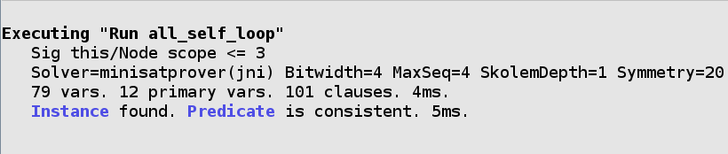

Commands¶
A command is what actually runs the analyzer. It can either find models that satisfy your specification, or counterexamples to given properties.
By default, the analyzer will run the top command in the file. A
specific command can be run under the Execute menu option.
run¶
run tells the analyzer to find a matching example of the spec.
run pred¶
Find examples where pred is true. If no examples match, the analyzer
will suggest the predicate is inconsistent (see unsat core). The
predicate may be consistent if the scope is off.
sig Node {
edge: set Node
}
pred self_loop[n: Node] {
n in n.edge
}
pred all_self_loop {
all n: Node | self_loop[n]
}
run all_self_loop
The analyzer will title the command as the predicate.
run {constraint}¶
Finds an example satisfying the ad-hoc constraint in the braces.
// some node with a self loop
run {some n: Node | self_loop[n]}
Tip
The analyzer will title the command run${num}. You can give the command a name by prepending the run with name::
some_self_loop:run {some n: Node | self_loop[n]}
check¶
check tells the Analyzer to find a counterexample to a given constraint. You can use it to check that your specification behaves as you expect it to.
Unlike with run commands, check uses assertions:
assert no_self_loops {
no n: Node | self_loop[n]
}
check no_self_loops
Asserts may be used in check commands but not run commands.
Assertions may not be called by other predicates or assertions.
You can also call check with an ad-hoc constraint:
check {no n: Node | self_loop[n]}
check can also be given a named command.
Scopes¶
All alloy models are bounded: they must have a maximum possible size. If not specified, the analyzer will assume that there may be up to three of each top-level signature and any number of relations. This is called the scope, and can be changed for each command.
Given the following spec:
sig A {}
sig B {}
We can write the following scopes:
run {} for 5: Analyzer will look for models with up to five instances of each A and B.run {} for 5 but 2 A: Analyzer will look for models with up to two instances of A.run {} for 5 but exactly 2 A: Analyzer will only look for models with exactly two A. The exact scope may be higher than the general scope.run {} for 5 but 2 A, 3 B: Places scopes on A and B.
If you are placing scopes on all of the signatures, the for N except
is unnecessary: the last command can be written as
run {} for 2 A, 3 B.
Tip
When using Arithmetic Operators, you can specify Int like any other signature:
run foo for 3 Int
Note
You cannot place scopes on relations. Instead, use a predicate.
sig A {
rel: A
}
run {#rel = 2}
Scopes on Subtypes¶
Special scopes may be placed on extensional subtypes. The following is valid:
sig Plant {}
sig Tree extends Plant {}
sig Grass extends Plant {}
run {} for 4 Plant, exactly 2 Tree
Grass does not need to be scoped, as it is considered part of
Plant. The maximum number of atoms for a subtype is either it or its
parent’s scope, whichever is lower. The parent scope is shared across
all children. In this command, there are a maximum of four Plants,
exactly two of which will be Tree atoms. Therefore there may be at
most two Grass atoms.
In contrast, special scopes may not be placed on subset types. The following is invalid:
sig Plant {}
sig Seedling in Plant {}
run {} for 4 Plant, exactly 2 Seedling
Since Seedling is a subset type, it may not have a scope. If you
need to scope on a subtype, use a constraint:
run {#Seedling = 2} for 4 Plant